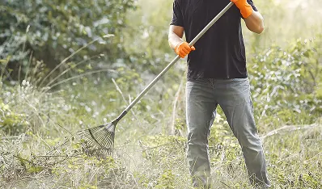

Brush Clearing in Metairie, LA
Big Easy Land Clearing clears dense undergrowth, overgrown lots, plus fence-line growth on tight Metairie properties, cutting back to clean, usable land while protecting fences and structures, as well as the neighbors on both sides. Estimates are free, fast, and accurate: 504-517-0012.
A side yard that went from grass to a wall of privet in two growing seasons. A vacant lot next door dropping seed and vines over the fence line. A canal-side strip that keeps creeping back no matter how many times it gets weed-whacked. On a Metairie lot there's no room to run equipment loose, so we cut it back by hand where it counts and haul off everything that comes down.
Sound familiar?
Why Does Metairie Brush Get Out of Hand?
Overgrown fence lines
Privet, vines, and volunteer trees closing the gap between two houses set close together.
Vacant or neglected lots
An empty lot next to an occupied home, brush grown up to the property line and dropping seed over the fence.
Canal and ditch-side growth
Vine and volunteer growth along drainage strips that keeps creeping back after every mow.
A backyard that got away
A yard put on hold during a project or a season and grown three feet taller than anyone remembers.
The Metairie approach
How Do We Clear Brush on Tight Lots?
Metairie lots don't leave much margin. A fence line eight feet from a fence line, a shed close enough to touch the neighbor's carport, sprinkler heads and buried lines nobody drew a map for. When brush takes over a strip like that, you can't run equipment through it the way you would on open acreage. We walk the property first and figure out what's actually under the growth: a chain-link fence buried in privet, a gas meter someone forgot was back there, a live oak sapling worth keeping versus the vine choking it.
Most of the calls we get in Metairie fall into a handful of patterns. A side yard between two houses that hasn't been touched in a couple of growing seasons and has gone from grass to a wall of privet and blackberry. A vacant lot next to an occupied house where brush has grown up to the property line and started dropping seed into the neighbor's yard. A canal-side or ditch-side strip where vine growth and volunteer trees keep creeping back no matter how many times somebody weed-whacks it. Backyards that got put on hold during a renovation and came back taller than anyone remembers planting.
On a tight lot, clearing brush is as much about protecting what stays as removing what goes. Equipment stays inside marked lines, our crew hand-cuts close to fences and structures instead of mowing through them, and anything you want kept gets flagged before work starts. Vines get pulled off what they're climbing rather than cut and left to rot in place, which matters when there's a tree or a fence underneath worth saving. Everything that comes down gets hauled off the property. You're not left with a brush pile at the curb to deal with yourself.
Brush left alone in southeast Louisiana doesn't slow down. The growing season is long, and privet, vine, plus volunteer trees come back fast if the root systems aren't dealt with. We talk through what regrowth to expect based on what's actually growing on your property, and if forestry mulching makes more sense for the size of the job than hand-clearing, we'll say so before we quote it. The estimate is free, fast, and accurate, and it accounts for how tight the access is before anyone shows up with equipment. Every job is licensed and insured, backed by a 100% satisfaction guarantee.

Straight answers
Metairie Brush Clearing FAQs
Can you clear brush on a small Metairie lot with fences close on both sides? +
Will the brush just grow back? +
Do you clear vacant or overgrown lots, not just backyards? +

Call 504-517-0012 for a Free Estimate
One crew, the right equipment, and a real number up front.
Free, fast, and accurate
Get Your Free Estimate
Call us or send the form. Licensed and insured, backed by a 100% satisfaction guarantee.
504-517-0012- ✓ Free, fast, and accurate estimates
- ✓ Licensed and insured
- ✓ 100% satisfaction guarantee